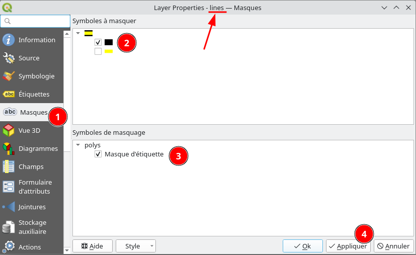
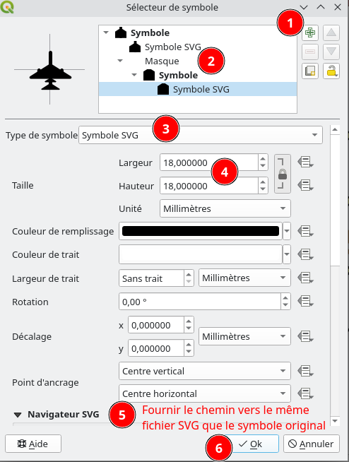

<style> img { margin:0 !important; vertical-align:top !important; } table td { border-bottom: 0 !important; padding-left: 0 !important; vertical-align:top !important; } </style> ## Cartographie avanc√©e avec QGIS Rencontres des Utilisateurs Francophones de QGIS<br/> Grenoble - 27/03/2024 </td><td></img></td> Julien Cabieces / Jacky Volpes <img src="oslandia_logo_164x164.png" height="150" /> --- ### Qui sommes nous ? <table vertical-align="middle"> <tr><td><img text-align="center" src="juc_rond.png" height="250" /></td> <td> Julien Cabieces<br/> Developpeur C++/Python<br/> QGIS Core committer<br/> <img text-align="center" src="github_logo.svg" height="32" width="32"/><em>@troopa81</em><br/> <img text-align="center" src="twitter_logo.svg" height="32" width="32"/><em>@CabiecesJ</em><br/> <img text-align="center" src="mastodon_logo.svg" height="32" width="32"/><em>@CabiecesJ@mapstodon.space</em> </td> </tr> </table> <table vertical-align="middle"> <tr> <td> Jacky Volpes<br/> Developpeur C++/Python<br/> Contributeur c≈ìur QGIS & Plugins<br/> <img text-align="center" src="github_logo.svg" height="32" width="32"/><em>@Djedouas</em><br/> <img text-align="center" src="mastodon_logo.svg" height="32" width="32"/><em>@djedouas@mamot.fr</em> </ul> </td> <td><img text-align="center" src="jvo_rond.png" height="250" /></td> </tr> </table> --- ## Plan de l'atelier - ‚úèÔ∏è Rendu cat√©gorie, d√©grad√©, ensemble de r√®gles *(30')* - üé≠ Les masques s√©lectifs *(30')* - üìê G√©n√©rateur de g√©om√©trie *(45')* - ‚è±Ô∏è La dimension temporelle *(30')* - üóé Mises en pages et rapport *(45')* *On ne parlera pas de la symbologie des raster* üò¢ --- ## Rendu par cat√©gorie, gradu√©, r√®gles --- #### Chargez la donn√©e: Les b√¢timents de Grenoble - T√©l√©chargez la [donn√©e](batiments_grenoble.gpkg) - Extrait de la [base de donn√©es nationale des b√¢timents](https://bdnb.io/download/) - *Seulement quelques champs ont √©t√© s√©lectionn√©s* --- #### Rendu cat√©goris√© --- #### Rendu gradu√© - S√©lectionnez le style *"classe √©nerg√©tique"* - √âtudiez la symbologie --- #### Rendu par r√®gle (Exercice) - On veut la classe √©nerg√©tique - **ET** des hachures si c'est du *R√©sidentiel collectif* --- #### Rendu par r√®gle (R√©ponse) AND "ffo_bat_usage_niveau_1_txt" = 'R√©sidentiel collectif' --- ## Les masques s√©lectifs --- ### Selective masking Kezako ?  --- --- *Ce trucage a √©t√© r√©alis√© par des professionnels ... sans QGIS* --- <img height="500" src="layout_export.png" /> - 1 symbole d'une couche masque 1 autre symbole d'une couche - On peut avoir plusieurs masques - **Ceci n'est pas un buffer** --- ### Pr√©requis - T√©l√©chargez le fichier [selective_masking.gpkg](selective_masking.gpkg) - Glissez-D√©posez dans QGIS - S√©lectionner le projet "selective_masking" --- ### 1er exercice Les √©tiquettes des polygones doivent masquer la partie noire des lignes --- #### 1. Configuration du masque --- #### 2. Configuration de ce qui est masqu√©  --- #### R√©sultat --- ### 2√®me exercice Le symbole *Jet* doit masquer la partie noire des lignes --- #### 1. Configuration du masque <!-- TODO arriver √† mettre cette foutu fleche au milieu, le style du haut bloque --> <table > <tr><td> </t> <td vertical-align="middle !important">‚û°Ô∏è</td> <td></td> </tr> </table> --- #### 2. Configuration de ce qui est masqu√© --- #### R√©sultat --- #### Modifiez le symbole de masquage - Aggrandissez sa taille - Zoomez/D√©zoomez - Qu'observez vous ? --- #### Le masquage a √©t√© supprim√© üò± - Un nouveau symbole a √©t√© cr√©√© lors du changement - Le lien de masquage avec l'ancien symbole est cass√© --- #### Export PDF - *Projet* > *Importer/Exporter* > *Exporter la carte au format PDF* - La carte est au format vecteur - Sauf si vous cochez *Transformer la carte en raster* - Exportez avec et sans masques - Qu'observez vous ? --- #### Export PDF - l'export avec masque est 10% plus gros...dans cet exemple - Plus y a de feature qui masque/masqu√©e, plus le fichier sera gros - voire **TR√âS** gros (Go...) - et des fois, √ßa [crashe](https://github.com/qgis/QGIS/issues/50543) --- #### Fonctionnel... ...mais a quelques faiblesses/fragilit√©s/limitations: - Lien de masquage cass√© d√©s qu'on modifie le masque/masqu√© - Pas d'avertissement quand un lien de masquage est cass√© - Export peut [crasher](https://github.com/qgis/QGIS/issues/50543) si beaucoup d'√©l√©ments - Export vectoriel g√©n√®re des √©normes fichiers - Ne fonctionne pas avec du SVG (limitation Qt) Cela pourrait √™tre grandement am√©lior√© üí∏ --- ## Le g√©n√©rateur de g√©om√©trie --- ### Pour quoi ? - Cr√©er des symboles sur-mesure - Placer des √©tiquettes √† des endroits particuliers - R√©v√©ler votre cr√©ativit√©  [Article Geotribu : R√©aliser une carte comme la couverture de l'album Unknow Pleasures de Joy Division](https://geotribu.fr/articles/2022/2022-07-11_qgis_joy_division/) --- ### Exemples (1/5) : point de mesure  --- ### Exemples (2/5) : zone r√©serv√©e  --- ### Exemples (3/5) : zone r√©serv√©e  --- ### Exemples (4/5) : zone de couverture  --- ### Exemples (5/5) : passages pi√©tons  --- ### TP : jeu de donn√©es [T√©l√©charger le g√©opackage](generateur_geometries.gpkg) - Couche de points : points de mesures - Couche de points : cam√©ras avec orientation et angle de vue - Couche de lignes : zones de stationnement - Couche de lignes : passages pi√©tons - Couche de polygones : Routes Correction : [Projet avec tous les symboles](./generateur_geometries.qgz) --- ### Par o√π d√©marrer ? Dans la section **Symbologie** des param√®tres de couche. - Choisir **G√©n√©rateur de g√©om√©trie** comme type de symbole. - Choisir le type de g√©om√©trie ([Multi] Point/Polyligne/Polygone) - Lancer le constructeur d'expressions.  --- ### Interagir avec une autre couche (1/3) `overlay_nearest` permet de r√©cup√©rer les entit√©s d'une autre couche les plus proches d'une g√©om√©trie donn√©e. Sur la couche points **mesures**, entrer cette expression comme g√©om√©trie g√©n√©r√©e ``` shortest_line( $geometry, overlay_nearest('routes', $geometry, limit:=1, max_distance:=50)[0] ) ``` On cr√©e la ligne entre notre point et la premi√®re entit√© la plus proche de la couche **routes**.  --- ### Symoble type "section" On agrandit cette ligne sur 20 m√®tres, et on garde l'intersection avec l'entit√© la plus proche de la couche **routes**. ``` intersection( extend( shortest_line( $geometry, overlay_nearest('routes', $geometry, limit:=1, max_distance:=50)[0] ), 0, -- pas d'extension c√¥t√© d√©but 20 -- 20m d'extension c√¥t√© fin ), overlay_nearest('routes', $geometry, limit:=1, max_distance:=50)[0] ) ```  --- ### Un peu de d√©tail On peut √©tendre un peu ce symbole de part et d'autre pour donner un aspect "mesure de section". ``` extend( intersection( extend( shortest_line( $geometry, overlay_nearest('routes', $geometry, limit:=1, max_distance:=50)[0] ), 0, -- pas d'extension c√¥t√© d√©but 20 -- 20m d'extension c√¥t√© fin ), overlay_nearest('routes', $geometry, limit:=1, max_distance:=50)[0] ), 1, -- 1m d'extension c√¥t√© d√©but 1, -- 1m d'extension c√¥t√© fin ) ```  --- ### Les variables On √©vite de r√©p√©ter des calculs, et la duplication de code. Cr√©ation d'une variable utilisable ensuite avec **@**. ``` -- D√©finition des variables with_variable( 'nearest_poly', overlay_nearest('routes', $geometry, limit:=1, max_distance:=50)[0], -- Code principal extend( intersection( extend(shortest_line($geometry, @nearest_poly), 0, 20), @nearest_poly ), 1, 1 ) ) ``` --- ### Attention La g√©om√©trie n'est pas l√† o√π le symbole appara√Æt.  On peut ajouter un niveau de symbole avec la g√©om√©trie r√©elle si besoin.   --- ### Symbole de zone de stationnement On veut seulement dessiner une ligne le long du trottoir o√π la zone va √™tre plac√©e par le g√©n√©rateur de g√©om√©trie.  --- ### Single sided buffer Zone de 1.50 m de large sur la route : ``` single_sided_buffer($geometry, 1.5, join:=2) ```  --- ### Pour d√©caler un peu la zone Pour d√©caler le rectangle, on pourrait utiliser la fonction `translate` mais il faut jouer avec la trigonom√©trie pour trouver les bons delta X et Y. Une astuce est d'utiliser la diff√©rence entre un rectangle plus grand, et un rectangle plus petit. Pour d√©caler de 20 cm du bord du trottoir :  --- ### Solution possible ``` with_variable('decalage', 0.2, difference( single_sided_buffer($geometry, 1.5 + @decalage, join:=2), buffer($geometry, @decalage, cap:='square', join:='miter') ) ) ``` --- ### Stationnement de bus Cr√©er une ligne qui zigue-zague entre 2 c√¥t√©s de 2 "single_sided_buffer" :  --- ### Pr√©paration Nous aurons besoin de plusieurs variables dans notre expression : - **rect1** et **rect2** (petit et grand single_sided_buffer) - **l1** et **l2** (ligne de base et haute du symbole)  --- ### Fonctions utiles On va chercher √† placer des points le long des lignes l1 et l2 : voir `line_interpolate_point`. Pour √™tre compatible avec des lignes de plusieurs segments, combiner `array_foreach` et `geometries_to_array` et `collect_geometries`.  --- ### Passages pi√©tons 2 symboles g√©n√©rateurs de g√©om√©tries : - un multipolygone de rectangles blancs le long de la ligne - un rectangle de fond gris le long de la ligne  --- ## La dimension temporelle --- ### R√©cup√©rez la donn√©e - T√©l√©chargez [Les arbres de Grenoble](arbres_grenoble.gpkg) - Donn√©e d'[origine](https://data.metropolegrenoble.fr/visualisation/export/?id=arbres-grenoble&disjunctive.sous_categorie_desc&disjunctive.espece&location=12,45.18821,5.74699) - r√©cup√©r√©e/modif√©e sur le [portail](https://data.metropolegrenoble.fr/) de la m√©trop√¥le de Grenoble - Ouvrir le projet --- ### Probl√®me: Pas de date - timestamp / begin / end sont NULL - Cr√©ation d'une date √† partir d'*anneedeplantation* --- ### Configuration temporelle - Activez le *Panneau Contr√¥leur temporel* - Clic droit sur la bo√Æte √† outil - R√©glez la *Plage d'animation* et le *Pas* - *Play* --- ### Configuration temporelle - Flickering d√©sagr√©able √† chaque *pas* ü§¢ --- ### Rendu Heatmap - 1. Opacit√© sur les premiers stops (0%, 50%) - 2. Si *Automatique* : Rendu non constant, adaptatif en fonction du min/max - 2. Fixe (400 pas mal): - Si trop **bas**, saturation zones de fortes densit√© - Si trop **haut**, zones de faible densit√© disparaissent - 3. *Plus rapide* quand on manipule --- #### D√©corations --- ### Cr√©er un GIF (1/2) - Export une liste d'image - **D'abord** la largeur en pixel, puis la couche (dessin sur le canvas) --- ### Cr√©er un GIF (2/2) - G√©n√©rer le GIF - En ligne [Ezgif](https://ezgif.com/maker) - Avec [GIMP](https://www.birdseyeviewgis.com/blog/2020/8/14/creating-a-covid-19-temporal-animation-with-qgis) - Sous Windows avec l'application d'√©dition vid√©o int√©gr√©  --- ### Quelques liens utiles - *[Geogiffery](https://www.gispo.fi/en/blog/geogiffery-in-2020-with-qgis-temporal-controller/) in 2020 with QGIS temporal controler* par **GISPO** - *[Creating a COVID-19 Temporal Animation](https://www.birdseyeviewgis.com/blog/2020/8/14/creating-a-covid-19-temporal-animation-with-qgis) with QGIS* par **Kurt Menke** - *[Animating Time Series Data](https://www.qgistutorials.com/en/docs/3/animating_time_series.html) in QGIS 3* par **Ujaval Gandhi (spatialthoughts)** --- ## Mises en pages et rapport --- ### Avoir une page d'atlas pour chaque zone principale. Chaque page aura autant de carte que de zones secondaires. Charger les couches atlas zones principales et secondaires :  --- ### R√©sultat d√©sir√©  Des id√©es ? --- ### Lien entre zones principale et secondaires Ajouter un champ virtuel dans la table des zones secondaires pour savoir √† quelle zone principale elle appartient. Voir la fonction `overlay_within`.  --- ### L'atlas Comme nous avons une page par zone principale, c'est notre couche de couverture. Le nom de la page sera le champ "nom". Cr√©er une premi√®re carte pour la zone secondaire 1, d√©finir les expressions pour l'emprise - min X, min Y - max X, max Y Voir la fonction `get_feature`. *Astuce* : pour pr√©voir les cartes des autres zones secondaires, utiliser les variables de l'objet pour le num√©ro de zone. --- ### L'opacit√© S'il n'y a pas de zone du num√©ro concern√©, il faut que la carte n'apparaisse pas sur la page. √âcrire une expression adapt√©e pour l'opacit√© de la carte dans la section *Rendu*.  --- ### Le style de couche comme filtrage Pour ne pas voir appara√Ætre les autres zones secondaires dans une carte, utiliser une symbologie **ensemble de r√®gles** avec une r√®gle de filtrage utilisant les variables `@atlas_page_name` et celle du num√©ro de zone secondaire. Avant  Apr√®s  --- ### Atlas temporel Avec le projet des arbres de Grenoble, cr√©er une mise en page, et configurer l'atlas. Une page correspondra √† un intervalle de temps (voir la couche `intervalles` qui sera utilis√©e comme couche de couverture). Dans les propri√©t√©s de la carte ajout√©e √† la mise en page, cocher **Plage temporelle** et d√©finir les expressions ad√©quates. Voir la fonction `attribute`. --- ### Aper√ßu  --- # Questions Rencontres des Utilisateurs Francophones de QGIS<br/> Grenoble - 27/03/2023 </td><td></img></td> Julien Cabieces / Jacky Volpes <img height=150px src="oslandia_logo_164x164.png">